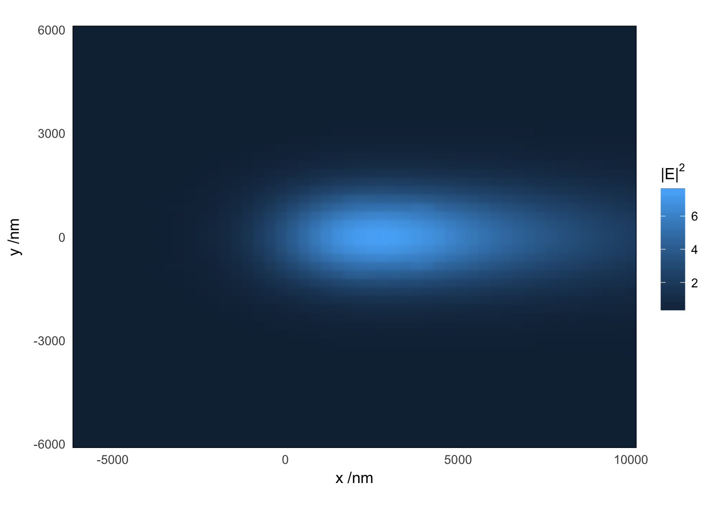
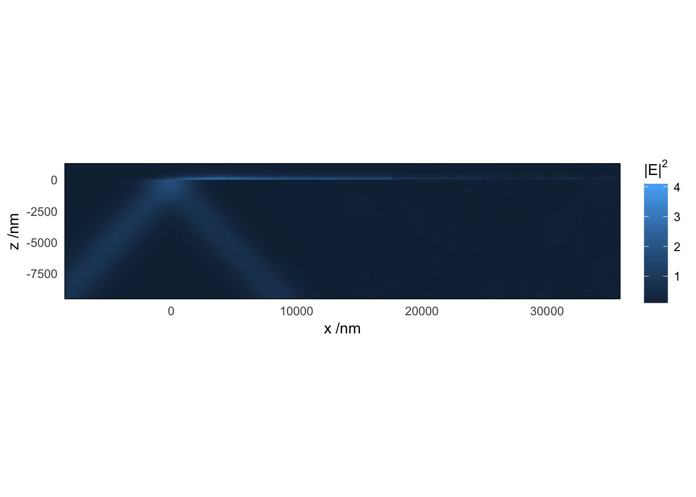

Gaussian-beam illumination: theory
baptiste Auguié
24 February, 2017
Theory
We consider a planar interface, possibly with multiple layers, illuminated by a gaussian beam from an incident medium (\(i\)). We seek to calculate the near-field profile in the outer medium (\(o\)).
Description of the incident beam

Illustration of the different reference frames used in the derivation. (a) The central ray of the gaussian beam makes an angle \(\alpha\) with the normal to the interface. (b) The polarisation is described by the angle \(\Psi\) between the electric field and the \(x_1\) axis; values of \(\Psi=0,90\) correspond to \(p-\) and \(s-\) polarisations, respectively. (c) A rotation of angle \(\delta\) brings the frame of reference \(F_2'\) to coincide with the plane of incidence of a given plane wave.
Following Novotny, we start with the angular spectrum representation of the incident beam with wavevector \(\mathbf{k}_i\). In a frame \(F_1\) attached to the central ray as depicted in Fig.~1, the electric field at a point \(\mathbf{r}_1\), is expanded as (Novotny Eq. 3.9 p. 47, Eq. 3.27, p.54), \[ \mathbf{E}_1(\mathbf{r}_1) = \iint a(k_{i1x},k_{i1y}) \exp\left(i \mathbf{k}_{i1} \cdot \mathbf{r}_1 \right)\mathbf{\hat e}_1(\mathbf{r}_1,\mathbf{k}_{i1})\mathrm{d} k_{i1x}\mathrm{d} k_{i1y}, \] where \[ a(\mathbf{k}_1) = \frac{w_0^2}{4\pi} e^{ -\frac{w_0^2}{4}(k_{1x}^2 + k_{1y}^2)} \] describes the gaussian field profile with waist \(w_0\), and \(\mathbf{\hat e}_1 = \left(\cos \psi ; \sin \psi ; 0\right)^t\) describes the electric field direction. Note that for a focused beam, the electric field direction would not be constant (see e.g Eq.~3 of Burghardt et al.), and the angular spectrum decomposition would contain a factor \(k/k_z\) (close to 1 in the paraxial approximation).
Rotation of reference frames
The transmitted electric field should be expressed in a reference frame attached to the planar interface (independent of the incident angle), we thus define a rotation matrix around the axis \(y_1\). \[ R_y(\alpha) = \begin{bmatrix} \cos (\alpha) & 0 & \sin (\alpha)\\ 0 & 1 & 0 \\ -\sin (\alpha) & 0 & \cos (\alpha) \end{bmatrix}. \] For each individual plane wave in the integrand, a second rotation is performed around the \(z_2\) axis, that brings the new reference frame \((x'_2,y'_2,z'_2)\) to coincide with the plane of incidence of that particular plane wave,
\[ R_z(\delta) = \begin{bmatrix} \cos (\delta) & \sin (\delta) & 0\\ -\sin (\delta) & \cos (\delta) & 0 \\ 0 & 0 & 1 \end{bmatrix}. \]
The angle of rotation \(\delta\) is given by
\[ \delta = \sin^{-1}\frac{s_{2y}}{\sqrt{s^2_{2x} + s^2_{2y}}} \] where \(\mathbf{\hat s}_2 = R_y(\alpha) \mathbf{\hat s}_1\) is obtained by rotation of the normalised incident wavevector \(\mathbf{\hat s}_1 = \mathbf{k}_{i1}/|\mathbf{k}_{i1}|\). Each plane wave, expressed in this dedicated frame of reference, is now written
\[ \mathbf{E}_{i2'}(\mathbf{r}_{2'}) = \mathbf{\hat e}_{i2'}\exp\left(i \mathbf{k}_{i2'} \cdot \mathbf{r}_{2'} \right). \]
Transmission at the interface
We consider an individual plane wave incident on the interface, and express the amplitude in the frame \(F_2'\) of the electric field \(\mathbf{E}_{o2'}\) on the outer side using the Fresnel coefficients \(t^p\) and \(t^s\) (Etchegoin, Le Ru, App. F.3),
\[ \mathbf{E}_{o2'} (\mathbf{r}_{2'}) = \begin{bmatrix} \left(\frac{n_i}{n_o}\right)^2\frac{k_{o2z}}{k_{i2'z}}t^p E_{i2'x}\\ t^s E_{2'y}\\ \left(\frac{n_i}{n_o}\right)^2t^p E_{i2'z} \end{bmatrix}\exp\left(i \mathbf{k}_{o2'}\cdot \mathbf{r}_{2'} \right). \] The wave vector of the transmitted, potentially evanescent plane wave is given by \(\mathbf{k}_{o2'} = \left(k_{i2'x}, k_{i2'y}, \sqrt{k_o^2 - (k_{i2'x}^2+k_{i2'y}^2)}\right)\).
The electric field is finally transformed back into the reference frame \(F_{2}\) by a rotation of \(R_z(-\delta)\).
The integration over the distribution of incident plane waves is performed in polar coordinates,
\[ \mathbf{E}_{o2}(\mathbf{r}_2) = \int_0^{2\pi} \int_0^1 a(\rho,\theta) \mathbf{E}_{o2} (\mathbf{r}_{2}, \rho, \theta) \rho k_i^2 \mathrm{d}\rho \mathrm{d} \theta, \]
with
\[ \left\{\begin{aligned} k_{ix1} &=k_i \rho\cos\theta\\ k_{iy1} &=k_i \rho\sin\theta\\ \end{aligned}\right.. \] In practice, and to reduce the computation time, the range of integration for \(\rho\) is restricted to \([0, 6/(k_i w_0)]\); this cutoff value for \(\rho\) was chosen such that the corresponding weight factor \(e^{ -\frac{w_0^2}{4}k_i^2\rho^2}\) in the integrand is reduced by a factor \(\exp(-3^2)\sim 10^{-4}\) compared to the central ray.
Numerical implementation and code considerations
The code is split into 2 main functions. integrand_gb_layer() is the integrand, that calculates the transmitted electric field at a point r2(x,y,z) given a value of \(rt = (\rho, \theta)\), and the parameters of the system. The complex electric field is reshaped into a 6-vector with real components (interlaced) suitable for 2D adaptive numerical quadrature (routine ). The integration routine is called sequentially for \(N\) points r2 in the function field_gb_layer(), returning a \(N\times 3\) complex matrix of electric fields. If points in r2 lie before the interface (negative z), the electric field is calculated as the sum of the reflected and incident fields. It should be noted, however, that points lying inside the multilayer structure (\(0<z<d_{\mathrm{max}}\)) will not return the correct electric field, which cannot be (easily) inferred from the Fresnel coefficients alone. To compute the electric field at every point in space, a transfer matrix method can be used instead. This was implemented in the functions integrand_gb_ml and field_gb_ml, calling multilayer_field for the transfer matrix calculation, at the expense of a computional time (\(\sim 1.5\) times slower).
Validation of the results
Surprisingly few results are available in the literature. We can first check that the limit of large beam waist agrees with the simpler case of plane-wave illumination.
Evolution of the near-field profile as a function of beam waist. The electric field is calculated at a fixed distance of 1nm from the metal surface. The (average) incident angle is kept constant, corresponding to the condition of optimum coupling for plane-wave illumination.
A similar calculation was also performed by Weeber et al. (Phys Rev B 83, 115433 (2011)), though they used a simplified 1D parametrisation of the gaussian beam, thus neglecting saggital (“off-axis”) rays. Because SPPs are only excited with TM-polarised light, however, their influence on the results is minimal. Below we reproduce the beam-shift discussed in their work.
Simulation of the electric field in the Kretschmann-Raether configuration. A gold layer (n=0.180 + 5.12i) surrounded by glass (n=1.52) and air is illuminated with TM-polarised light from the glass side. The electric field is calculated as a function of position along the interface (x) at a distance of 50nm (top panel) and 100nm (bottom panel) from the interface. The dotted curves correspond to the same simulation without a gold film.
Examples
The calculation can produce near-field maps.
w0 <- 2000
xyz <- as.matrix(expand.grid(x=seq(-3*w0, 5*w0, length=50),
y=seq(-3*w0, 3*w0, length=50),
z=51))
res <- gaussian_near_field_ml(xyz, epsilon=struct$epsilon,
wavelength=struct$wavelength,
thickness=struct$thickness,
w0=w0, alpha=spp, maxEval=600)
m <- data.frame(xyz, field=res)
ggplot(m, aes(x, y, fill=field))+
geom_raster(interpolate=TRUE) +
scale_x_continuous(expand=c(0,0))+
scale_y_continuous(expand=c(0,0)) +
labs(x=expression("x /nm"), fill=expression("|E|"^2),
y=expression("y /nm")) +
coord_fixed() We can also visualise the field pattern along the depth of the sample. At the optimum incidence angle for SPP excitation, the colour scale is stretched by the strong field enhancement in the region immediately above the metal layer. For more visually-interesting plot, we consider the less optimal coupling at 43 degrees of incidence, and a relatively narrow beam.
simulation_bottom <- function(w0=1e4, angle=0,
wavelength=632.8,
epsilon=c(1.5^2, epsAg(wavelength)$epsilon, 1.0^2),
thickness = c(0, 50,0)){
angle <- angle*pi/180
xyz <- as.matrix(expand.grid(x=seq(-2*w0-10*wavelength*sin(angle),
2*w0+50*wavelength, length=100),
y=0,
z=seq(-15*wavelength, 2*wavelength, length=100)))
res <- gaussian_near_field_ml(xyz, wavelength=wavelength,
epsilon=unlist(epsilon), thickness=thickness,
w0=w0, alpha=angle, maxEval=500)
data.frame(xyz, field=res)
}
simulation_top <- function(w0=1e4, angle=0,
wavelength=632.8,
epsilon=c(1.5^2, epsAg(wavelength)$epsilon, 1.0^2),
thickness = c(0, 50,0)){
angle <- angle*pi/180
xyz <- as.matrix(expand.grid(x=seq(-2*w0,
2*w0+50*wavelength, length=100),
y=0,
z=seq(0, wavelength, length=100)))
res <- gaussian_near_field_ml(xyz, wavelength=wavelength,
epsilon=unlist(epsilon), thickness=thickness,
w0=w0, alpha=angle, maxEval=500)
data.frame(xyz, field=res)
}
params <- expand.grid(w0=2000,
angle=43)
bottom <- mdply(params, simulation_bottom, .progress="none")
top <- mdply(params, simulation_top, .progress="none")
both <- rbind(bottom, top)
ggplot(top, aes(x, z, fill=field))+
# facet_grid(angle~w0, scales="free")+
geom_raster(data = top, interpolate=TRUE) +
geom_raster(data = bottom, interpolate=TRUE) +
scale_x_continuous(expand=c(0,0))+
scale_y_continuous(expand=c(0,0)) +
labs(x=expression("x /nm"), fill=expression("|E|"^2),
y=expression("z /nm")) +
coord_equal()
We see a sizable reflection in the incident medium, showing horizontal bands of interference in the region where the incident and reflected fields overlap. Excitation of SPPs yields a localised field profile above the metal layer, but shifted from the center of the incident beam. As SPPs propagate for several microns, the region of enhanced field is stretched in the (positive) x direction.